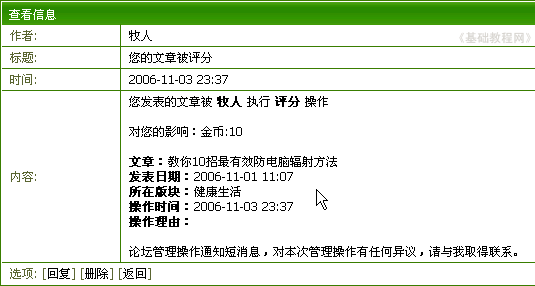

论坛新手操作基础
一、论坛短消息 返回目录
在论坛中，除了通过发帖交流以外，也可以用论坛短消息进行单独交流，另外当你的帖子受到奖励、评分时也会收到系统发送的短消息，下面我们来看一个练习；
1、进入论坛首页
1）输入网址，例如在地址栏输入http://bbs.laxjyj.com/后回车即可登录论坛首页；

2）此时在左上角显示“您尚未 登录 注册”，点击“登录”链接进入注册页面；

3）在登录页面，输入用户名、密码，选择cookie，然后点击“提交”，过一会儿就登录成功，在页面左边出现自己的用户名；

2、查阅短消息
1）当有新短消息时，登录以后会有“叮咚”的提示音，同时在论坛菜单里，短消息那儿是亮色；

2）点击论坛菜单“您有新消息”，选择“收件箱”，进入以后，可以看到一个未读短消息；
3）点击标题即可进入阅读，短消息里面也可以有图片、有链接地址等；

4）看完后可以点下面的“回复”进行回信，也可以点“删除”腾出空间；
3、发送短消息
1）点论坛菜单“短消息－写新消息”，进入发送短消息面板；
2）在窗口中依次写上用户名、标题、内容，然后点提交就可以发出去了，跟发帖框差不多；
3）提交之前可以把“保存到发件箱”勾上，这样以后可以在发件箱里找着；
本节学习了使用论坛短消息的的基本方法，如果你成功地完成了练习，请继续学习下一课内容；
本教程由86团学校TeliuTe制作|著作权所有
基础教程网：http://teliute.org/
美丽的校园……
转载和引用本站内容，请保留版权信息和本站链接。